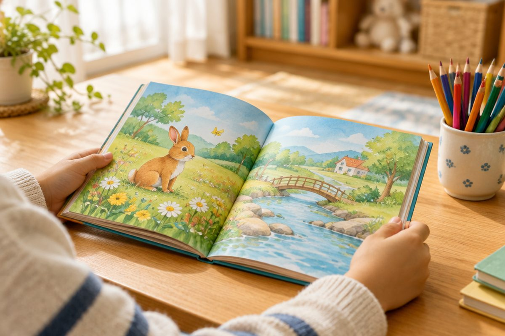

일본어는 왜 글자가 세 가지나 있을까?

일본 그림책을 펼쳐 보면 동글동글한 글자, 뾰족뾰족 각진 글자, 복잡한 네모 글자가 섞여 있어요. 일본어에는 글자가 세 가지나 있거든요! 오늘은 세 글자가 각각 어떤 일을 하는지 알아봐요.
동글동글 기본 글자, 히라가나
일본 아이들이 가장 먼저 배우는 글자는 히라가나(ひらがな, hiragana, 히라가나)예요. 모양이 둥글둥글하고 부드러워요.
한글 '가'가 한 소리를 내는 것처럼, 히라가나도 한 글자가 한 소리를 내요. 예를 들어 あ는 '아', ね는 '네', こ는 '코' 소리예요.
히라가나는 기본 글자가 46개예요. 일본어 낱말과 문장의 뼈대가 되는 글자라서 우리도 히라가나부터 배워요.
ねこ(neko, 네코) = 고양이 / やま(yama, 야마) = 산
뾰족뾰족 각진 글자, 가타카나
두 번째 글자는 가타카나(カタカナ, katakana, 카타카나)예요. 직선이 많아서 각지고 뾰족해 보여요.
가타카나는 주로 다른 나라에서 들어온 말을 쓸 때 써요. 빵, 텔레비전, 바나나 같은 낱말이에요.
히라가나와 가타카나는 소리가 같고 모양만 달라요. 히라가나 あ와 가타카나 ア는 둘 다 '아' 소리예요.
パン(pan, 팡) = 빵 — 아주 옛날 포르투갈 말에서 들어온 낱말이라 가타카나로 써요.
뜻을 담은 글자, 한자
세 번째 글자는 한자(かんじ, kanji, 칸지)예요. 아주 옛날 중국에서 들어온 글자로, 글자 하나하나에 뜻이 들어 있어요.
예를 들어 山이라는 한자는 '산'이라는 뜻이고, 일본어로 やま(yama, 야마)라고 읽어요.
한자는 어려워서 어린이 책에서는 한자 위에 작은 히라가나를 붙여 읽는 법을 알려 줘요. 이 작은 글자를 '후리가나'라고 해요.
山 위에 작게 やま → '야마'라고 읽어요. 뜻은 '산'
세 글자가 한 문장에 함께 나와요
일본어 문장에는 세 글자가 섞여서 나와요. 한자로 뜻을 보여 주고, 히라가나로 문장을 이어 주고, 가타카나로 외국에서 온 말을 써요.
우리말은 한글 한 가지로 쓰지만, 일본어는 세 가지를 함께 써요. 처음엔 어려워 보여도 히라가나부터 차근차근 익히면 괜찮아요.
山で パンを たべます。(야마데 팡오 타베마스) = 산에서 빵을 먹어요. → 山(한자), パン(가타카나), で・を・たべます(히라가나)
핵심 낱말
- 히라가나
- 둥글둥글한 일본어 기본 글자. 일본 아이들이 가장 먼저 배워요.
- 가타카나
- 각진 일본어 글자. 다른 나라에서 들어온 말을 쓸 때 주로 써요.
- 한자
- 옛날 중국에서 들어온 글자. 글자마다 뜻이 있어요.
- 후리가나
- 한자 위에 작게 써서 읽는 법을 알려 주는 히라가나.
꼭 알아야 할 표현
| ひらがな | 히라가나 (동글동글한 기본 글자) | hiragana (히라가나) |
| カタカナ | 가타카나 (각진 글자) | katakana (카타카나) |
| かんじ | 한자 (뜻을 담은 글자) | kanji (칸지) |
| にほんご | 일본어 | nihongo (니홍고) |
| あ | 히라가나 '아' | a (아) |
| ア | 가타카나 '아' (あ와 소리가 같아요) | a (아) |
| ねこ | 고양이 🐱 | neko (네코) |
| やま | 산 ⛰️ (한자로 山) | yama (야마) |
| パン | 빵 🍞 | pan (팡) |
| こんにちは | 안녕하세요 (낮 인사) | konnichiwa (콘니치와) |
한 줄 정리
- 일본어 글자는 히라가나, 가타카나, 한자 세 가지예요.
- 히라가나는 기본 글자, 가타카나는 외국에서 온 말, 한자는 뜻을 담은 글자예요.
- 히라가나와 가타카나는 소리가 같고 모양만 달라서, 히라가나부터 배우면 돼요.
학교 교육과정 연결 (가정 학습 과정)
초등학교 정규 교육과정에는 일본어가 없어요. 처음 배우는 아이를 위한 가정 학습용 입문 단원이에요.